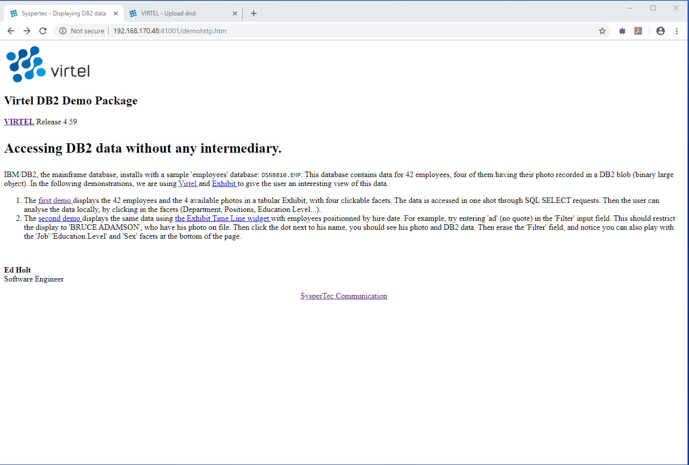
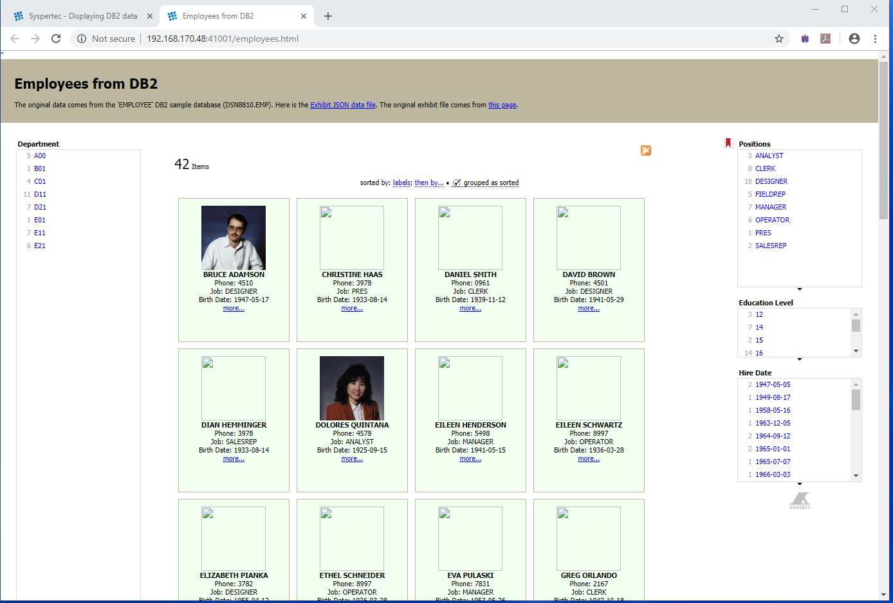
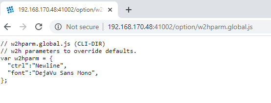

Integrating DB2 and Virtel
Introduction
In this newsletter we discuss how to use Virtel to extract DB2 table data then use that data as input to an external publishing framework. Virtel uses an initial scenario which drives a VSV service program to access the sample DB2 table DSN8810.EMP. In the following demonstration IBM’s DB2 V9 was used.
Setting up
The DB2 demo package, db2demo.zip, is available as a zip file in the public directory on the Virtel website https://ftp-group.syspertec.com/ This zip file contains all the relevant files required to implement the Virtel DB2 Demo package. Follow these steps to install the package : - 1. In your Virtel STC concatenate your DB2 SDSNLOAD library to the Virtel SERVLIB 2. Create a larger SAMPLIB. The delivered SMAPLIB has no secondary extents and when you try to upload the code from the package to the existing SAMPLIB it will E37. Create a copy a new SAMPLIB and allocate some addition secondary extents - SPACE=(TRK,(100,10,50)) 3. Expand the db2demo.zip into the directory c:Virteldemohttp. It will expand to three directories:-
SAMPLIB DB2TRANS, SCENSQLS, SERVSQL, VSVCLIST, VSVCASYC
CNTL DB2ARBO and DB2COMP
W2H See below
Using FTP or IND$FILE to upload the members in the SAMPLIB directory to your Virtel SAMPLIB library.
Likewise, using FTP or IND$FILE, upload the members in the CNTL directory to your Virtel CNTL library.
Using the Virtel Administration Portal, ‘Drag and Drop’ the members in the W2H directory to the Virtel W2H directory.
Modify the W2H entry point WEB2HOST and remove SCE-DIR as the default search directory for scenarios. Search for scenarios from the loadlib instead.
Run the DB2ARBO and DB2COMP jobs.
CNTL Members
DB2ARBO
This job complies the DB2 scenario and updates the W2H directory with a new transaction called DB2. You will need to modify the JCL to meet your site standards.
DB2COMP
This job complies the VSV service program SERVSQL and also builds and binds the associated DBRM module. You will need to modify the JCL to meet your site and DB2 standards. The SERVSQL program is linked into the VIRTEL SERVLIB library.
SAMPLIB Members
DB2TRANS Sample DB2 transaction
SCENSQLS Sample Initial scenario
SERVSQL Cobol Service program
VSVCASYC VSV Copybook
VSVCLIST VSV Copybook
W2H Directory Members
_history_.html Dummy template
demohttp.htm Initial template
employees.html Primary template
employeesHireDates.html Secondary template
phonedir.js DB2 JavaScript Extract. Calls Virtel DB2 transaction
sqlreq.htm Error page
Running the DB2 Demo Package
Stop and restart Virtel to pick up the JCL changes, in particular the addition of the DB2 SDSNLOAD library.
Refresh the Virtel Cache
Enter the URL virtel.com:41001/demohttp.htm. The following screen should appear: -

This web page template provides two demonstration links, demonstration 1 and demomonstartion 2.
Demonstrations
There are two demonstrations both of which use a third party publishing framework to present the data extracted from the DB2 database. In both demonstrations, the website simile-widgets.org is used to provide either an EXHIBIT and TIMELINE framework presentation. The related EXHIBIT or TIMELINE frameworks take as input a JSON array.
Demonstration 1
Selecting DEMO1 should present an EXHIBIT presentation screen which should look like: -

Demonstration 2
Selecting DEMO2 produces a TIMELINE presentation screen which looks like: -

For both screens, the input is a JSON array structure of employees built by the Virtel scenario SCENSQLS after extracting the table data from DB2. The source DB2 table is DSN8810.EMP.
DB2 access via a Virtel transaction
DB2 Basic access
IF access to external web sites is not permitted than you can still test the DB2 access through a basic DB2 access. You can invoke the Virtel DB2 transaction to extract an employee’s image from the database with the following URL: -
192.168.170.48:41001/web2ajax+DB2?PHOTO=000150
The scenario, via the VSV service program SERVSQL, will extract the photo image from the DB2 table and present it in a basic HTML template. PHOTO+nnnnnn is a parameter passed to the scenario which contains the employee number of the person whose photo is returned. The output from the above transaction URL looks like this : -

Putting it all together
The key to accessing the DB2 data and preparing the required JSON structure is through the Virtel Initial scenario SCENSQLS. See Appendix A for a full listing of this scenario. This scenario is activated whenever the Virtel DB2 transaction is invoked. This scenario extracts parameters from the calling URL and prepares a parameter structure to pass into the VSV service program SERVSQL. This parameter structure includes the SQL SELECT statement to run against the DB2 table. The call to SERVSQL is made through the VSV API by calling the Virtel VIRSV$ interface from within the scenario. The SERVSQL program calls DB2, issues the SQL statement and extracts the data from DB2. The results are returned back to the scenario and are mapped into an internal array mapped by the following mapping structure :-
*---------------------------------------------------------------------*
* Describe expected output *
*---------------------------------------------------------------------*
MYTABLE MAP$ BEGIN,OCCURS=UNLIMITED
recEMP MAP$ BEGIN
MAP$ AREA,WITH='EMPNO',LENGTH=6,TYPE=X
** MAP$ ABEND,WITH='1rst Empno'
MAP$ AREA,WITH='FIRSTNME',LENGTH=12,TYPE=X
MAP$ AREA,WITH='LASTNAME',LENGTH=15,TYPE=X
MAP$ AREA,WITH='WORKDEPT',LENGTH=3,TYPE=X
MAP$ AREA,WITH='PHONENO',LENGTH=4,TYPE=X
MAP$ AREA,WITH='HIREDATE',LENGTH=10,TYPE=X
MAP$ AREA,WITH='JOB',LENGTH=8,TYPE=X
MAP$ AREA,WITH='EDLEVEL',LENGTH=6,TYPE=X
MAP$ AREA,WITH='SEX',LENGTH=1,TYPE=X
MAP$ AREA,WITH='BIRTHDATE',LENGTH=10,TYPE=X
recEMP MAP$ END
MYTABLE MAP$ END
This internal data is made available to the calling JavaScript code, in this case phonedir.js, though the following Virtel tags. For example, in the http template employees.html we invoke the Virtel DB2 transaction which calls the initial scenario SCENSQLS : -
<link href="/w2h/phonedir.js+DB2?DEPT=*"type="application/json" rel="exhibit-data"/>
The output from the scenario is returned to phonedir.js which parses through the internal Virtel “EMPNO” array structure using the following Virtel tags : -
{<!--VIRTEL start="{{{" end="}}}" -->{{{SET-OUTPUT-ENCODING-UTF-8 ""}}}{{{SET-CONTENT-TYPE "text/plain"}}}
"items" : [
{{{FOR-EACH-VALUE-IN "EMPNO"}}}
{"LastName": "{{{TRIMMED-VALUE-OF "LASTNAME"}}}",
"FirstName": "{{{TRIMMED-VALUE-OF "FIRSTNME"}}}",
"Sex": "{{{TRIMMED-VALUE-OF "SEX"}}}",
"Job": "{{{TRIMMED-VALUE-OF "JOB"}}}",
"PhoneNumber": "{{{TRIMMED-VALUE-OF "PHONENO"}}}",
"EmployeeNumber": "{{{TRIMMED-VALUE-OF "EMPNO"}}}",
"Dept": "{{{TRIMMED-VALUE-OF "WORKDEPT"}}}",
"DeptName": "{{{CURRENT-VALUE-OF "DEPTNAME"}}}",
"HireDate": "{{{CURRENT-VALUE-OF "HIREDATE"}}}",
"BirthDate": "{{{CURRENT-VALUE-OF "BIRTHDATE"}}}",
"EducationLevel": "{{{TRIMMED-VALUE-OF "EDLEVEL"}}}",
"label": "{{{TRIMMED-VALUE-OF "FIRSTNME"}}} {{{TRIMMED-VALUE-OF "LASTNAME"}}}",
"photo": "../sqlreq.htm+DB2?photo={{{TRIMMED-VALUE-OF "EMPNO"}}}"
}{{{AFTER-NOT-LAST-VALUE-OF "EMPNO",}}}
{{{END-FOR "EMPNO"}}}
]
}
The parsing on the internal Virtel mapping array builds a JSON array with each element representing an employee. The JSON array structure is then used as input by the EXHIBIT or TIMELINE template from http://simile-widgets.org.
Appendix A
SCENSQLS Scenario
SCENSQLS INITIAL SCENARIO
SCENSQLS SCREENS EXEC=NO,APPL=SCENSQLS
*
* Scenario to issue DB2 query via VIRSV
*
SCENARIO INITIAL
*
*---------------------------------------------------------------------*
* Put name of DB2 into variable DB2ID *
*---------------------------------------------------------------------*
COPY$ VALUE-TO-VARIABLE,VAR='DB2ID', -
VALUE='DB9G'
*---------------------------------------------------------------------*
* Put employee number into variable QPARAM1 *
*---------------------------------------------------------------------*
COPY$ INPUT-TO-VARIABLE,VAR='QPARAM1', -
FIELD='PHOTO'
IF$ NOT-FOUND,THEN=SELDEPT
*---------------------------------------------------------------------*
* SQL query to select employee image *
*---------------------------------------------------------------------*
COPY$ VALUE-TO-VARIABLE,VAR='SQLSTMT', -
VALUE='SELECT BMP_PHOTO FROM DSN8910.EMP_PHOTO_RESUME -
WHERE EMPNO=?'
*---------------------------------------------------------------------*
* Call service program to execute SQL query *
*---------------------------------------------------------------------*
VIRSV$ CALL-REUSE,('SQLQUERY','SERVSQL'), -
(STRINGZ-FROM-VARIABLE,'DB2ID'), -
(IN-VARIABLE,'SQLSTMT'), -
(IN-VARIABLE,'QPARAM1'), -
(OUT-VARIABLE,'QRESULT',256K), -
(OUT-VARIABLE,'ERRMSG',800), -
KEY=8, -
ERROR=SQLQERR
*---------------------------------------------------------------------*
* Send resulting image as HTTP response *
*---------------------------------------------------------------------*
SEND$ AS-ANSWER,VAR='QRESULT',TYPE='image/bmp', -
EXPIRES=ENDOFDAY
*
SCENARIO END
*
SELDEPT DS 0H
*---------------------------------------------------------------------*
* Put department number into variable QPARAM1 *
*---------------------------------------------------------------------*
COPY$ INPUT-TO-VARIABLE,VAR='QPARAM1', -
FIELD='DEPT'
IF$ NOT-FOUND,THEN=PARMERR
*---------------------------------------------------------------------*
* Support DETT='*' *
*---------------------------------------------------------------------*
IF$ VARIABLE,'QPARAM1',EQ='*',THEN=ALLDEPT,ELSE=ONEDEPT
ALLDEPT EQU *
COPY$ VALUE-TO-VARIABLE,VAR='SQLSTMT', -
VALUE='SELECT EMPNO,FIRSTNME,LASTNAME,WORKDEPT,PHONENO, -
HIREDATE,JOB,EDLEVEL,SEX,BIRTHDATE -
FROM DSN8910.EMP'
GOTO$ DONEDEPT
*---------------------------------------------------------------------*
* Put SQL statement into variable SQLSTMT *
*---------------------------------------------------------------------*
ONEDEPT EQU *
COPY$ VALUE-TO-VARIABLE,VAR='SQLSTMT', -
VALUE='SELECT EMPNO,FIRSTNME,LASTNAME,WORKDEPT,PHONENO, -
HIREDATE,JOB,EDLEVEL,SEX,BIRTHDATE -
FROM DSN8910.EMP WHERE WORKDEPT=?'
DONEDEPT EQU *
*---------------------------------------------------------------------*
* Describe expected output *
*---------------------------------------------------------------------*
MYTABLE MAP$ BEGIN,OCCURS=UNLIMITED
recEMP MAP$ BEGIN
MAP$ AREA,WITH='EMPNO',LENGTH=6,TYPE=X
** MAP$ ABEND,WITH='1rst Empno'
MAP$ AREA,WITH='FIRSTNME',LENGTH=12,TYPE=X
MAP$ AREA,WITH='LASTNAME',LENGTH=15,TYPE=X
MAP$ AREA,WITH='WORKDEPT',LENGTH=3,TYPE=X
MAP$ AREA,WITH='PHONENO',LENGTH=4,TYPE=X
MAP$ AREA,WITH='HIREDATE',LENGTH=10,TYPE=X
MAP$ AREA,WITH='JOB',LENGTH=8,TYPE=X
MAP$ AREA,WITH='EDLEVEL',LENGTH=6,TYPE=X
MAP$ AREA,WITH='SEX',LENGTH=1,TYPE=X
MAP$ AREA,WITH='BIRTHDATE',LENGTH=10,TYPE=X
recEMP MAP$ END
MYTABLE MAP$ END
*---------------------------------------------------------------------*
* Call service program to execute SQL query *
*---------------------------------------------------------------------*
VIRSV$ CALL-REUSE,('SQLQUERY','SERVSQL'), -
TASKS=5, -
(STRINGZ-FROM-VARIABLE,'DB2ID'), -
(IN-VARIABLE,'SQLSTMT'), -
(IN-VARIABLE,'QPARAM1'), -
(OUT-VARIABLE,'QRESULT',64K), -
(OUT-VARIABLE,'ERRMSG',800), -
KEY=8, -
ERROR=SQLQERR
*---------------------------------------------------------------------*
* Create Virtel variables needed by output template *
*---------------------------------------------------------------------*
MYTABLE TOVAR$ FROM-VARIABLE,VAR='QRESULT'
*---------------------------------------------------------------------*
*
SCENARIO END
*
*---------------------------------------------------------------------*
* Error exits *
*---------------------------------------------------------------------*
PARMERR EQU *
COPY$ VALUE-TO-VARIABLE,VAR='$ERRMSG$', -
VALUE='SCENSQLS: DEPT=xxx or PHOTO=nnnnnn required'
SET$ PAGE,'sqlreq.htm'
ERROR$ 1
SCENARIO END
*
SQLQERR EQU *
COPY$ VALUE-TO-VARIABLE,VAR='ERRMSG', -
VALUE='SCENSQLS: Error in service program SERVSQL'
SET$ PAGE,'sqlreq.htm'
ERROR$ 2
SCENARIO END
*
SCRNEND
END ,